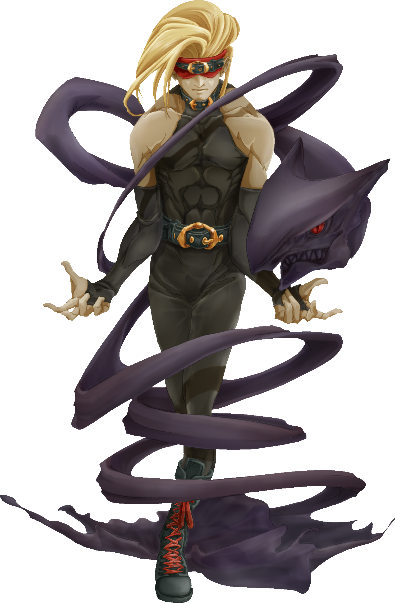

eddie has a unique mechanich near your health bar their some times is a red,black meter. that is used to show how long eddie(the black shadow on the ground) can stay around, it depletes when you release an attack button